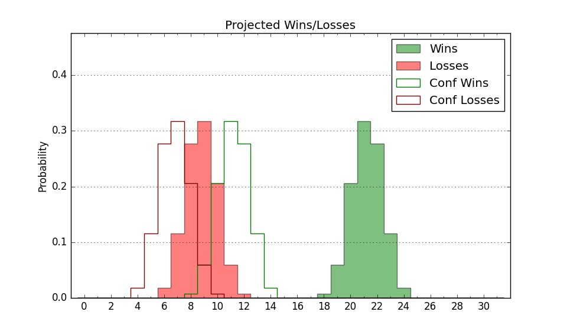

| Home | Game Probabilities | Conferences | Preseason Predictions | Odds Charts | NCAA Tournament |
| City: | Waco, Texas | |
| Conference: | Big 12 (3rd)
| |
| Record: | 8-4 (Conf) 18-6 (Overall) | |
| Ratings: | Comp.: 26.2 (11th) Net: 26.2 (11th) Off: 125.3 (4th) Def: 99.1 (75th) SoR: 88.1 (11th) |
| Remaining | ||||||
|---|---|---|---|---|---|---|
| Date | Opponent | Win Prob | Pred. | |||
| 2/20 | @ BYU (12) | 35.4% | L 78-82 | |||
| 2/24 | Houston (1) | 39.5% | L 67-70 | |||
| 2/26 | @ TCU (28) | 50.7% | W 80-79 | |||
| 3/2 | Kansas (15) | 69.5% | W 79-74 | |||
| 3/4 | Texas (26) | 77.4% | W 80-72 | |||
| 3/9 | @ Texas Tech (25) | 48.9% | L 75-76 | |||
| Previous | Game Score | |||||
| Date | Opponent | Win Prob | Result | Off | Def | Net |
| 11/7 | (N) Auburn (7) | 45.9% | W 88-82 | 4.4 | 5.2 | 9.6 |
| 11/12 | Gardner Webb (192) | 96.9% | W 77-62 | -17.4 | 9.2 | -8.2 |
| 11/14 | UMKC (249) | 97.9% | W 99-61 | 15.4 | 2.6 | 18.1 |
| 11/22 | (N) Oregon St. (166) | 93.1% | W 88-72 | -0.1 | -6.3 | -6.4 |
| 11/24 | (N) Florida (31) | 67.2% | W 95-91 | 4.5 | -6.7 | -2.2 |
| 11/28 | Nicholls St. (266) | 98.2% | W 108-70 | 10.3 | -2.8 | 7.5 |
| 12/2 | Northwestern St. (325) | 99.2% | W 91-40 | 0.4 | 29.0 | 29.4 |
| 12/5 | Seton Hall (58) | 85.5% | W 78-60 | 3.2 | 6.4 | 9.6 |
| 12/16 | (N) Michigan St. (18) | 56.4% | L 64-88 | -22.6 | -19.1 | -41.7 |
| 12/20 | (N) Duke (17) | 55.6% | L 70-78 | -10.6 | -4.3 | -14.9 |
| 12/22 | Mississippi Valley St. (362) | 99.9% | W 107-48 | 10.7 | -0.3 | 10.4 |
| 1/2 | Cornell (102) | 92.1% | W 98-79 | 6.7 | -7.4 | -0.6 |
| 1/6 | @Oklahoma St. (115) | 79.5% | W 75-70 | -10.9 | 2.3 | -8.6 |
| 1/9 | BYU (12) | 65.1% | W 81-72 | -4.9 | 8.0 | 3.1 |
| 1/13 | Cincinnati (39) | 80.0% | W 62-59 | -16.2 | 12.2 | -4.0 |
| 1/16 | @Kansas St. (84) | 70.7% | L 64-68 | -24.3 | 8.9 | -15.4 |
| 1/20 | @Texas (26) | 50.1% | L 73-75 | 10.7 | -17.0 | -6.4 |
| 1/27 | TCU (28) | 77.8% | L 102-105 | -6.3 | -12.6 | -18.9 |
| 1/31 | @UCF (60) | 63.5% | W 77-69 | 13.1 | -9.5 | 3.7 |
| 2/3 | Iowa St. (8) | 61.6% | W 70-68 | -1.4 | 3.0 | 1.6 |
| 2/6 | Texas Tech (25) | 76.6% | W 79-73 | -0.5 | 5.7 | 5.2 |
| 2/10 | @Kansas (15) | 40.1% | L 61-64 | -17.4 | 17.4 | 0.1 |
| 2/13 | Oklahoma (37) | 79.8% | W 79-62 | 17.7 | -4.2 | 13.5 |
| 2/17 | @West Virginia (144) | 85.1% | W 94-81 | 17.2 | -14.6 | 2.6 |
| Stats & Trends | |||||
|---|---|---|---|---|---|
| Current | Day | Week | Month | Season | |
| Composite | 26.2 | +0.1 | +0.8 | +0.8 | -0.4 |
| Comp Rank | 11 | -- | +1 | +2 | -6 |
| Net Efficiency | 26.2 | +0.1 | +0.8 | +1.0 | -- |
| Net Rank | 11 | -- | +1 | +3 | -- |
| Off Efficiency | 125.3 | +0.8 | +1.7 | +3.4 | -- |
| Off Rank | 4 | -- | -- | +1 | -- |
| Def Efficiency | 99.1 | -0.7 | -0.9 | -2.5 | -- |
| Def Rank | 75 | -6 | -7 | -21 | -- |
| SoS Rank | 19 | +2 | +3 | +36 | -- |
| Exp. Wins | 21.2 | +0.2 | +0.5 | -0.2 | +1.4 |
| Exp. Conf Wins | 11.2 | +0.2 | +0.5 | -0.2 | -0.4 |
| Conf Champ Prob | 5.6 | -0.6 | +0.2 | -9.9 | -15.4 |

| Advanced Stats | ||
|---|---|---|
| Stat | Value | Rank |
| Off Eff FG % | 0.600 | 4 |
| Off Ast Ratio | 0.177 | 30 |
| Off ORB% | 0.373 | 15 |
| Off TO Rate | 0.136 | 95 |
| Off FT Ratio | 0.415 | 16 |
| Def Eff FG % | 0.487 | 109 |
| Def Ast Ratio | 0.129 | 80 |
| Def ORB% | 0.234 | 32 |
| Def TO Rate | 0.163 | 77 |
| Def FT Ratio | 0.305 | 125 |